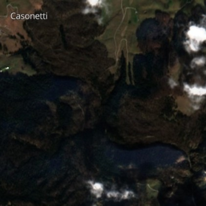
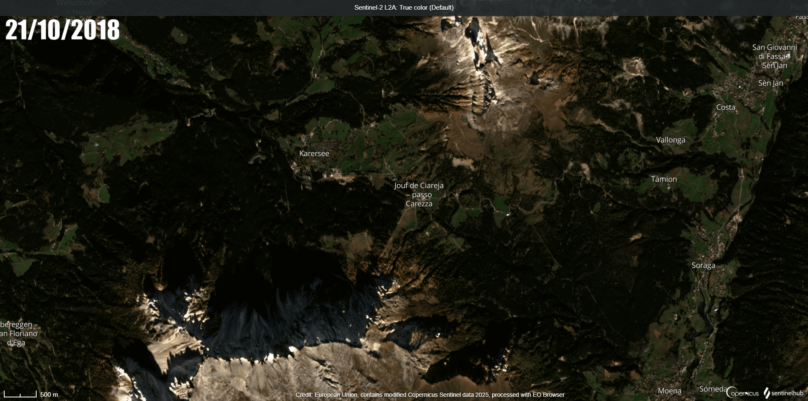

Immagini della Tempesta Vaia
Vista satellitare prima la tempesta a Paneveggio, data: 21/10/2018
Vista satellitare dopo la tempesta a Paneveggio, data: 11/11/2018
Si può vedere la più grande differenza sopra la scirtta Paneveggio per un area delle dimensione di 0,21 km^2
Vista satellitare prima la tempesta a Casonetti, data: 21/10/2018
Vista satellitare dopo la tempesta a Casonetti, data: 28/10/2018

Gif della situazione in zona passo Carezza